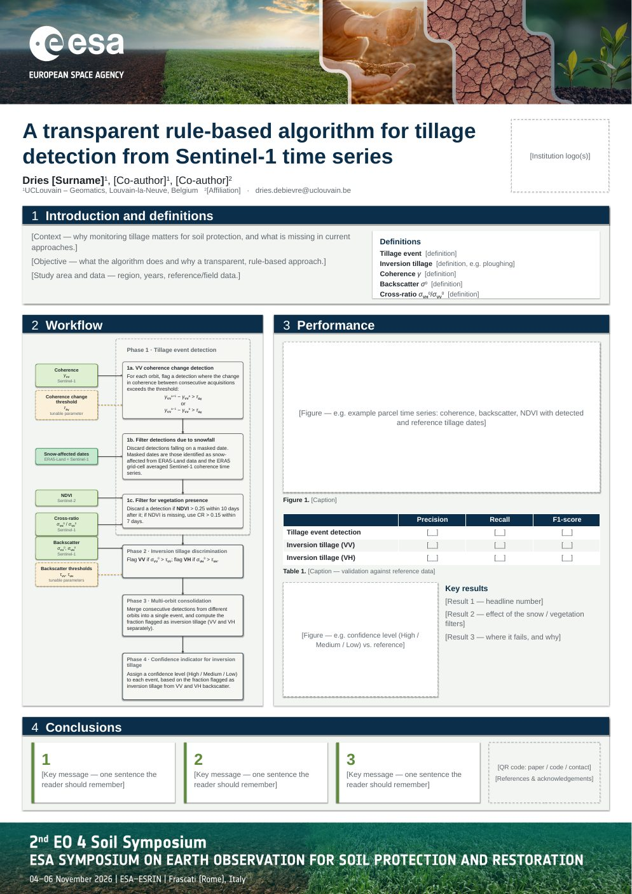

Tap the poster to open the full-resolution PDF.
In short
[Two or three sentences: what the algorithm detects, the data it uses (Sentinel-1 coherence and backscatter, Sentinel-2 NDVI, ERA5-Land), and the headline result.]
Contact
Dries [Surname]
[Position] · UCLouvain – Geomatics
- dries.debievre@uclouvain.be
- ORCID
- 0000-0000-0000-0000
- [profile]
- Web
- [group or personal page]